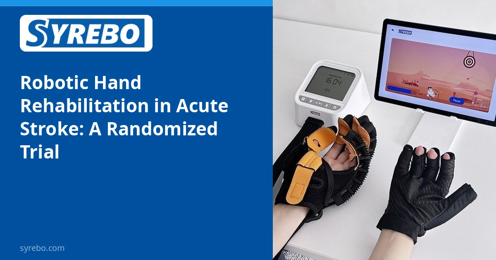
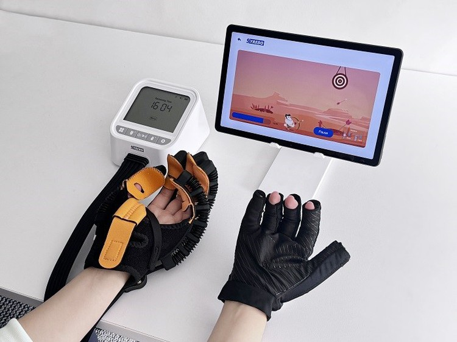

Rubrica de Cercetare Clinică Syrebo
Lecturi bazate pe dovezi despre reabilitarea robotică a mâinii


După un accident vascular cerebral, mâna este adesea partea cel mai greu de recuperat: ținerea unei cești, încheierea nasturilor unei cămăși sau mâncatul independent pot deveni provocări zilnice. Cu cât începe mai devreme o reabilitare bazată pe știință, cu atât mai valoroasă este fereastra de recuperare.
Un studiu controlat randomizat publicat în *Scientific Reports* (2026) aduce dovezi noi. Desfășurat la NP Brain Hospital din Turcia, studiul a înrolat 30 de pacienți cu accident vascular cerebral acut, repartizați aleatoriu în două grupuri. Grupul de reabilitare robotică a mâinii a primit antrenament robotic asistat SYREBO în plus față de terapia convențională de neurodezvoltare (NT), de trei ori pe săptămână timp de 8 săptămâni; grupul de control a primit doar NT.
Grupul cu mână robotică a arătat îmbunătățiri mai mari decât grupul de control la trei rezultate-cheie: testul Nine-Hole Peg (dexteritate fină a mâinii), chestionarul ABILHAND (activități zilnice bimanuale) și indicele Barthel (independența în viața de zi cu zi). Cu alte cuvinte, adăugarea antrenamentului robotic al mâinii la reabilitarea convențională în faza acută îi poate ajuta pe pacienți să își recapete mai devreme capacitatea de a-și folosi mâinile.
Limitele studiului: Eșantion mic (n=30); nicio diferență semnificativă între grupuri la rezultatele privind spasticitatea.